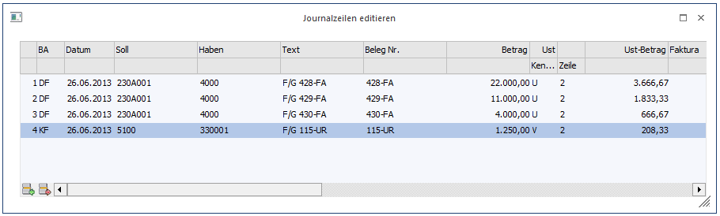

Im Menüpunkt
1 Buchen
1 Buchen
1 Stapel
oder Schnellaufruf
1 SRTG + 6
können Journaldateien in ASCII-Format eingelesen werden (z.B. falls von einer externen Fakturierung Journalzeilen übergeben werden sollen).
Die externen Buchungssätze können hier kontrolliert und korrigiert werden.
Bevor eine Stapeldatei als Buchungsstapel angelegt wird, findet eine formale Prüfung der Datensätze statt. Sollten bei diesem Prüflauf Fehler im Datensatzaufbau gefunden werden, werden diese auf einem Fehlerprotokoll gelistet. Jeder Buchungssatz der Übernahmedatei führt eine Satznummer. Diese Satznummer wird bei Druck des Journalprotokolls angedruckt. Die Satznummer des fehlerhaften Satzes wird dem Protokoll entnommen und kann somit in der Tabelle leicht gefunden werden.

Die Eingaben der Tabelle entsprechen den Feldern des Programmabschnittes Buchen. Es unterbleiben jedoch die bei der Erfassung üblichen formalen Prüfungen, die im Zuge des Dialogbuchens vorgenommen werden (z.B. Prüfung ob Konto gespeichert ist, ob USt-Prozentsatz zulässig ist, etc.).
Durchführung
ü Aufruf der Stapeldatei durch Anklicken des Buttons Editieren
ü Durchführung der Korrektur
ü Speichern der Änderung
ü Nochmaliger Journaldruck, um die durchgeführten Änderungen zu überprüfen
Aufbau der Erfassungsmaske:
Ø Buchungsart
B, DF, DZ, KF, KZ (siehe Kapitel Buchen)
Ø Datum
TT-MM-JJJJ; abhängig von der Ländereinstellung in der WINDOWS-Systemsteuerung. Durch Drücken der F3-Taste wird das aktuelle Systemdatum übernommen.
Ø Soll
Konto Soll. Durch Drücken der F9-Taste kann nach einem Konto gesucht werden.
Ø Haben
Konto Haben. Durch Drücken der F9-Taste kann nach einem Konto gesucht werden.
Ø Text
20stellig
Ø Belegnummer
7stellig, alphanumerisch
Ø Betrag
Ø Bruttobetrag
Ø USt.-Code
Mehrwertsteuer-Kennzeichen, z.B. U, oder V
Ø Zeile
Eingabe der Steuerzeile
Ø Steuerbetrag
Steuerbetrag für Buchung auf Automatikkonto
Offene Posten-Felder
Ø Faktura
Fakturennummer 7stellig, alphanumerisch, es dürfen keine Sonderzeichen wie ' oder % verwendet werden.
Ø Datum
Valutadatum, TT-MM-JJJJ, abhängig von der WINDOWS-Ländereinstellung. Durch Drücken der F3-Taste wird das aktuelle Systemdatum übernommen.
Ø Text
Eingabe eines OP-Textes
Zahlungskonditionen
- Skontoprozent 1
- Skontotage
1
- Skontoprozent 2
- Skontotage
2
- Nettotage
Ø Bemessungsgrundlagen
3 Felder für Bemessungsgrundlagen und die dazugehörige Steuerzeile
Beispiel
2 4200 1 1200
Ø FW
Fremdwährungscode, z.B. DM, US, etc.
Ø FW-Betrag
Eingabe des Betrags in Fremdwährung.
Beim Stapelbuchen können auch Debitoren- und Kreditorenzahlungen erfasst werden. Dabei ist zu beachten, dass bei Zahlungen andere Felder gefüllt werden:
Ø Faktura
Fakturennummer 7stellig, alphanumerisch, es dürfen keine Sonderzeichen wie ' oder % verwendet werden.
Ø Datum
Zahlungsdatum. Eingabe des Zahlungsdatums. Durch Drücken der F3-Taste wird das aktuelle Systemdatum übernommen.
Ø Text
Hinterlegung eines Textes, der in der OP-Verwaltung angezeigt wird.
Ø Zlg.: Sk-Betrag
Eingabe des Skontobetrages, der vom Fakturenbetrag abgezogen wird.
Ø berechnen / Skontoberechtigung
J: -> Für die Faktura darf ein
Skonto in Anspruch genommen werden.
N: -> Bei der Faktura darf kein Skonto
abgezogen werden.
Ø FW
Fremdwährungscode. Eingabe des Fremdwährungscodes.
Ø FW-Betrag
Eingabe des Fremdwährungsbetrages
Ø FW-Skonto
Eingabe des Skontobetrages in Fremdwährung.
Achtung
Werden Zahlungen mit Skontoabzug über die Stapelbuchhaltung gebucht, muss der Skontobetrag manuell gebucht werden. Es erfolgen keine automatischen Buchungen. Es wird lediglich der OP automatisch um den Skonto verringert.